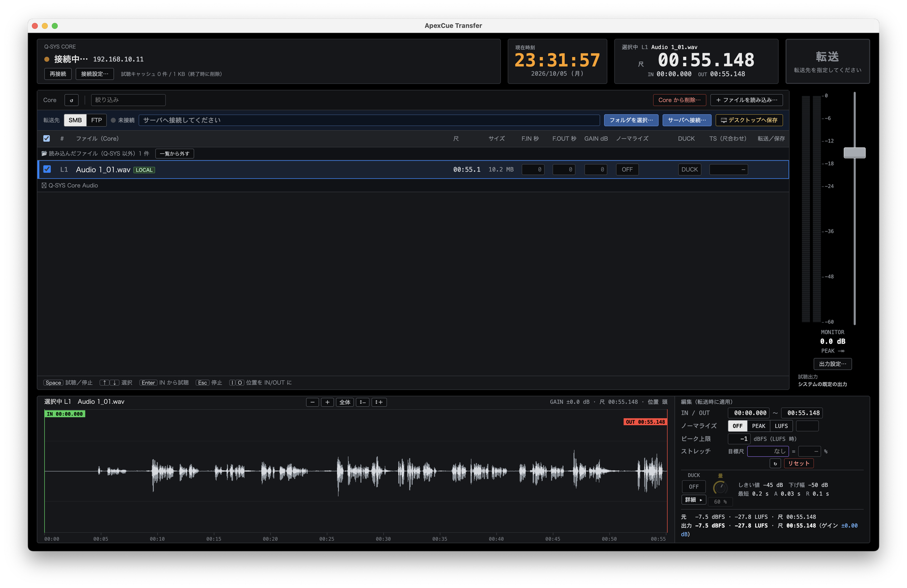
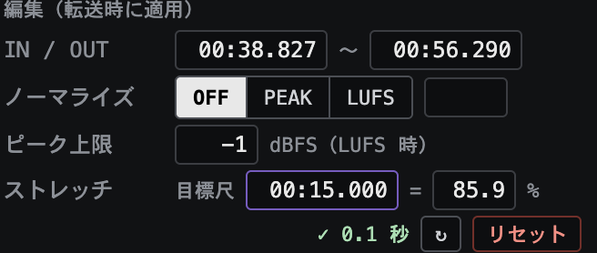
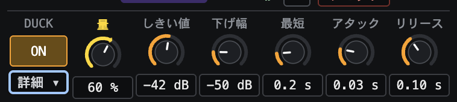

ApexCue Transfer
Automatic transfer tool for Q-SYS® recordings
A dedicated tool for easily retrieving and transferring audio files recorded with the built-in recording feature of Q-SYS Core processors.

Key features
Preview and trim the retrieved audio before transferring it.
- BrowseWhat’s on the Core
Core file list
See the audio files stored on the Core and preview them on the spot.
Other sources
Load audio files from your computer or a NAS as well.
- TrimQuick edits

IN/OUT, normalize and length can also be set numerically. 
Ducking with adjustable amount, threshold, attack, release and more. Waveform editing
IN/OUT, gain, fades (including by seconds), ducking and normalize — the same feel as PonDashi Player.
Length fitting
Time-stretch tuned for narration changes length without changing pitch.
- DeliverTransfer
To NAS, FTP or desktop
Just pick a folder each time — no destination setup. Files on the Core stay where they are (copy).
Name conflicts
When transferring, choose to keep the name, rename automatically, or enter a new name.
Transfer marks
Transferred and saved files are marked with a color and timestamp, kept even after you quit.
Requirements
| OS | Mac and Windows (contact us for supported versions) |
|---|---|
| Works with | Q-SYS® Core |
| Destinations | NAS (SMB share), FTP server, desktop |
| Data collection | None. Privacy policy |
Purchase and deployment
For pricing, purchasing and detailed specifications, please contact us directly by email.